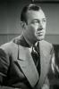

Also known as:The Living Ghost (original title)
Country:United States, 61 minutes
Spoken languages:English
Genres:Thriller, Horror, Mystery
Director(s):William Beaudine
Writer(s):Joseph Hoffman
Video Codec:Unknown
Number: 3084


Certification:
Storyline:
A detective investigating kidnapping case discovers the victim, who may be a zombie.
Cast: 

Medium: Original DVD,
Comments: Part of: Horror Classics - 100 Movie Pack
Loaned: No
Aspect ratio: Unknown